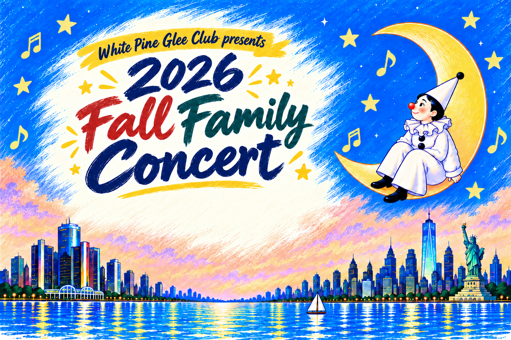
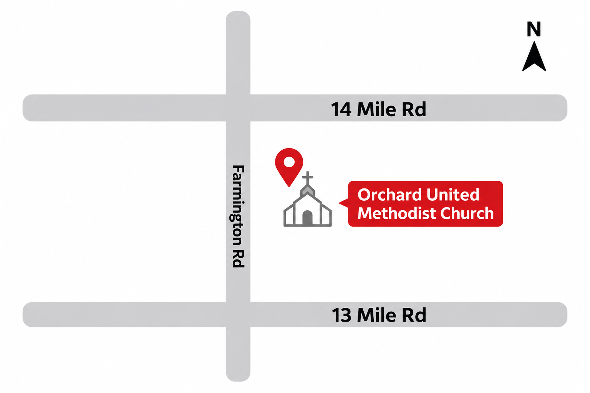
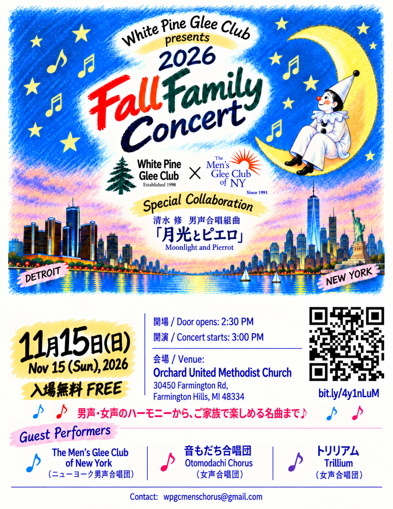

Stage IWhite Pine Glee Club &
The Men’s Glee Club of New York
指揮 / Conductor: 後藤恵子 / Keiko Goto

開場 / Doors open: 2:30 PM
開演 / Concert: 3:00 PM
入場無料 / FREE ADMISSION
主催のWhite Pine Glee Clubと、特別ゲストのThe Men’s Glee Club of New Yorkの代表よりご挨拶。
Welcome messages from the representatives of our host, WPGC, and special guest, MGCNY.
リンクのある曲名を選ぶと、日本語・英語の曲紹介が読めます。
Select a linked title to read its program notes in Japanese or English.
指揮 / Conductor: 後藤恵子 / Keiko Goto
指揮 / Conductor: TBD 伴奏 / Accompanist: TBD
曲目未定 / TBD
Intermission休憩
指揮 / Conductor: TBD 伴奏 / Accompanist: TBD
曲目未定 / TBD
指揮 / Conductor: 後藤恵子 / Keiko Goto 伴奏 / Accompanist: 内野あゆみ / Ayumi Uchino
指揮 / Conductor: TBD 伴奏 / Accompanist: TBD
Special Collaboration
清水 脩 男声合唱組曲
Moonlight and Pierrot
White Pine Glee ClubとThe Men's Glee Club of New Yorkは、これまでも合同演奏などを通じて長年交流を重ねてきました。今回は、ニューヨークから仲間たちをミシガンに迎え、日本の男声合唱を代表する名作のひとつ、清水脩作曲「月光とピエロ」を共に演奏します。長年の友情と、両地域から集まった歌声が織りなす特別なステージをお楽しみください。
The White Pine Glee Club and The Men's Glee Club of New York share a friendship built through years of musical exchange and joint performances. For this special occasion, we are delighted to welcome our friends traveling from New York to Michigan to join us in performing Moonlight and Pierrot by Osamu Shimizu, a classic of Japanese male choral music. We hope you enjoy this special performance, bringing together voices and friendship from both regions.
名簿準備中
名簿準備中
名簿準備中
名簿準備中
名簿準備中
名簿準備中
名簿準備中
名簿準備中
名簿準備中
名簿準備中
名簿準備中
名簿準備中

Open with Google Maps / Google Mapsで開く画像をタップ・クリックすると
拡大して見られます。

コンサートについてのアンケートにご協力ください。
Please share your feedback about the concert.